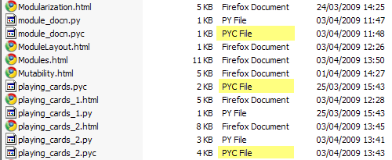

By now you may have noticed pyc files appearing in your working directories without your having creating them. While it's true you didn't manually create them you did cause them to be created. Remember that when you import a module it is executed. One result of this execution is a pyc file. Those pyc files are compiled versions of modules. Having them makes later imports quicker because the modules do not have to be recompiled; instead the pyc file can be used immediately. So, each time you import a module you trigger the creation of a pyc file. You can delete them if they annoy you, but it will slow later imports, and they'll get recreated when needed anyway.